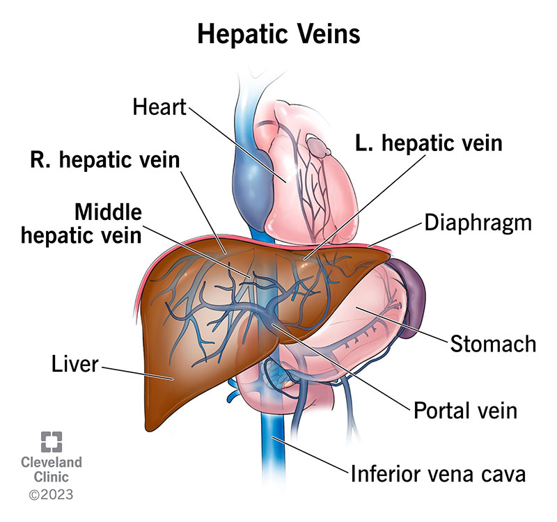
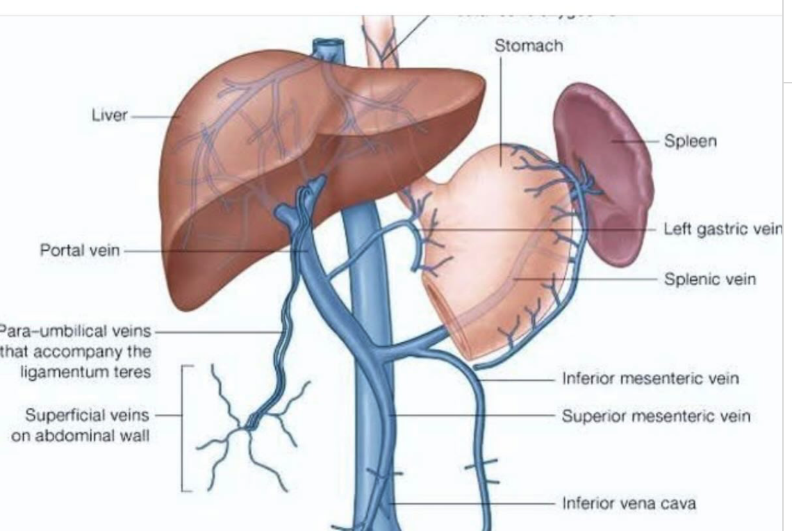

阿巴
先了解一下什么是 Portal Vein （门静脉）和 Hepatic Vein （肝静脉）。
如下解剖图所示，Venous blood（静脉血）的流向为：
Abdominal organs (腹部器官) → Portal Vein (门静脉) → Liver (肝脏) → Hepatic Vein (肝静脉) → Inferior Vena Cava (下腔静脉) → Right Atrium (右心房)

其中 L. R. 表示左右。
Tributaries of the portal vein（门静脉的支流）包括：
Superior Mesenteric Vein(上肠系膜静脉), which drains several organs in the middle of your belly, including your small intestine.Splenic Vein(脾静脉), which drains your spleen.Inferior Mesenteric Vein(下肠系膜静脉), which drains portions of your large intestine.Gastric Vein(胃静脉), which drains your stomach.Cystic Vein(胆囊静脉), which drains your gallbladder.
如下图所示

’Portal Vein 的作用是
Your portal vein delivers blood from organs in your belly to your liver for processing. Therefore, it’s vital to your portal venous system. It’s the main passageway for blood to enter your liver. All the other veins in your hepatic portal system ultimately converge (join paths) and lead to your portal vein. So, it needs to be healthy and working at its best for the whole system to work as it should.
下面介绍什么是 Tumor Thrombus （肿瘤栓子）：A tumor thrombus is a mass of living cancer cells that extends directly into and grows within a blood vessel, typically a vein.
不同于 Blood Thrombus （血栓），Tumor thrombus is made of living cancer cells, it is vascularized (has its own blood supply，血管化) and does not dissolve with standard blood thinners (抗凝药).
什么是 PVTT？
A tumor thrombus in the portal vein (PVTT) occurs when a malignant tumor invades the portal vein and begins to grow directly inside the blood vessel.
It is an organized collection of active cancer cells and clotted blood, rather than just a standard blood clot.
为什么 PVTT 会发生？
Certain cancers—most notably Hepatocellular Carcinoma (HCC，肝细胞癌), or primary liver cancer (including HCC and ICC, Intrahepatic cholangiocarcinoma，肝内胆管癌)—have a distinct biological ability to invade nearby blood vessels. When the tumor penetrates the walls of the portal vein, it extends into the blood vessel lumen, creating a continuous growth of malignant tissue.
Other cancers can also cause PVTT, including:
Renal cell carcinoma (kidney cancer)(肾细胞癌)Colorectal cancer(结直肠癌)Adrenal cortical carcinoma(肾上腺皮质癌)Pancreatic or stomach cancers(胰腺癌或胃癌)
PVTT 几乎可以发生于整个 portal venous system （门静脉系统），而且越靠近 main portal vein（主门静脉）预后越差，这也是目前 PVTT 分型（日本 Vp 分型，Cheng 分型）等的核心依据。最严重时，tumor thrombus 会继续沿 portal vein 像远端扩展到 superior mesenteric vein（SMV，肠系膜上静脉）。
换句话说，如果 tumor thrombus 停留在 liver 内的一些 segemental branch 内要相对而言不如扩展到 main portal vein 或外部的 superior mesenteric vein 严重。
但只要是 PVTT，就说明 HCC 已经有 macrovascular invasion （宏血管侵犯），临床上仍然属于高风险因素，只是小分支 PVTT 的预后和可治疗性通常好于主干或 SMV 受累。
下面我们讨论 PVTT 的 diagnosis。
Diagnosing a portal vein tumor thrombus (PVTT) requires distinguishing a cancerous growth within the vein from a non-cancerous (bland) blood clot.
It relies primarily on non-invasive, contrast-enhanced imaging.
The gold standard is histopathological confirmation （）, though this is rarely performed due to bleeding risks.
# PVTT 的诊断
-
Doppler Ultrasound（多普勒超声）原理：当物体运动时，反射波的频率会发生变化。根据红细胞的运动，得到血流的方向和速度。
对于 PVTT，it is often the first-line screening tool. 正常血流速度约 20-40cm/s，若减慢则可能提示 blood clot 或 tumor thrombus。 A key indicator for tumor thrombus is the presence of color Doppler flow (arterial vascularity，血供丰富程度，利用彩色多普勒检测到血供) inside the thrombus itself（病灶里面有动脉供血）. Bland clots are avascular. -
Contrast-Enhanced Computed Tomography（CECT，增强 CT，计算机断层扫描）原理：静脉注射iodinated contrast agent（含碘造影剂）后，然后利用 CT 检测（本质上测量的是 X-ray 衰减）造影剂在不同组织中的分布，从而反映组织的血液供应（blood perfusion）和血管结构。
对于 PVTT，CECT is usually atriphasic（三相的，三个不同的时间点） CT scan. Malignant thrombi show arterial phase enhancement due toneovascularization(new blood vessels，新生血管) and vessel expansion.
肝脏的供血约 75% 来自 portal vein，25% 来自 hepatic artery，而 HCC 的血供主要来自 hepatic artery，即肝动脉。三期 CECT 包括Arterial phase(动脉期，约注射造影剂后 20-30 秒) : 此时 hepatic artery 充满造影剂，但 portal vein 尚未完全充盈。典型的 HCC 有 Arterial phase hyperenhancement (APHE，动脉期明显强化)。Portal venous phase(门静脉期，约注射造影剂后 60-70 秒) : 此时 portal vein 充满造影剂，正常肝实质最亮。很多 HCC 会出现washout（廓清征），即肿瘤组织相对于周围肝组织变暗。Delayed phase(延迟期，约注射造影剂后 3-5 分钟) : 观察 washout 是否持续，capsule enhancement（包膜强化）等特征。
-
Magnetic Resonance Imaging (MRI)（磁共振成像）原理：观察人体组织里的氢原子（来源于水）如何响应磁场和射频脉冲。MRI 利用不同组织在强磁场停止后恢复速度的不同，来形成图像。
最关心T1 relaxation（T1 弛豫）和T2 relaxation（T2 弛豫）时间。T1 加权图像中，水含量高的组织信号暗，脂肪含量高的组织信号亮；T2 加权图像中，水含量高的组织信号亮，脂肪含量高的组织信号暗。
The most sensitive imaging modality for evaluating portal vein involvement. It distinguishes between tumor thrombi and benign clots using a mix of dynamic contrast-enhancement and diffusion-weighted sequences. -
FDG-PET/CT:（氟代脱氧葡萄糖 PET/CT）Occasionally used to differentiate benign from malignant thrombi, as tumor thrombi typically demonstrate increased metabolic activity.
positron emission tomography(PET，正电子发射断层显像) scan measures important body functions, such as metabolism. It helps doctors evaluate how well organs and tissues are functioning. -
Alpha-fetoprotein (AFP)（甲胎蛋白） For patients with suspected or known Hepatocellular Carcinoma (HCC), highly elevated AFP levels (>1,000 ng/dL) heavily support a malignant diagnosis.
# PVTT 的治疗
Treatment for a portal vein tumor thrombus (PVTT)—most commonly associated with hepatocellular carcinoma (HCC)—typically requires a tailored, multidisciplinary approach. Because the condition is complex, strategies are highly individualized based on the patient’s liver function and the extent of the thrombus.
-
Systemic Therapy（First-Line Standard） For patients with advanced-stage HCC (where PVTT is present), systemic therapies are often the primary standard of care.Targeted Therapies（靶向疗法）: Medications likesorafenib（索拉非尼） orlenvatinib（伐伦替尼） are frequently prescribed.Immunotherapy Combinations（免疫疗法组合）: Modern treatments often utilize immunotherapy combinations, such asatezolizumab+bevacizumab（阿替利珠单抗 + 贝伐珠单抗）ordurvalumab+tremelimumab（度伐利尤单抗 + 曲美木单抗）
-
Locoregional & Liver-Directed Therapies（局部及肝脏定向疗法）: These treatments are aimed directly at the tumor and thrombus while minimizing damage to healthy tissue.Radiation Therapy（放射治疗）:External Beam Radiation Therapy(EBRT，外照射放疗 / 体外放射治疗) andTransarterial Radioembolization(TARE，经动脉放射栓塞 / 经动脉放射性栓塞治疗) using Yttrium-90 are highly effective：通过导管从动脉进入肝脏供血血管，把含有放射性同位素 Yttrium-90 / 钇 - 90 的微球送到肿瘤供血动脉里。微球卡在肿瘤附近的小血管中，然后在局部释放辐射杀伤肿瘤。
They help shrink the tumor thrombus and control the primary liver mass.Chemoembolization: Transarterial Chemoembolization(TACE，经动脉化疗栓塞 / 经动脉化疗栓塞治疗) is used in select cases to block blood flow to the tumor while delivering concentrated chemotherapy.
-
Surgical Resection & Thrombectomy（手术切除及血栓切除术）: In highly specialized centers, surgery may be an option if the patient’s liver function is robust (typically Child-Pugh class A) and the thrombus is localized.En Bloc Resection（整块切除术）: Removing the tumor and the affected portion of the portal vein together.Tumor Thrombectomy（肿瘤血栓切除术）: Surgically extracting the thrombus from the portal vein to restore blood flow.
-
Hepatic Arterial Infusion Chemotherapy(HAIC，肝动脉灌注化疗): Often favored in Asian treatment guidelines, this method delivers chemotherapy directly into the hepatic artery to achieve high drug concentrations in the liver while reducing systemic side effects.